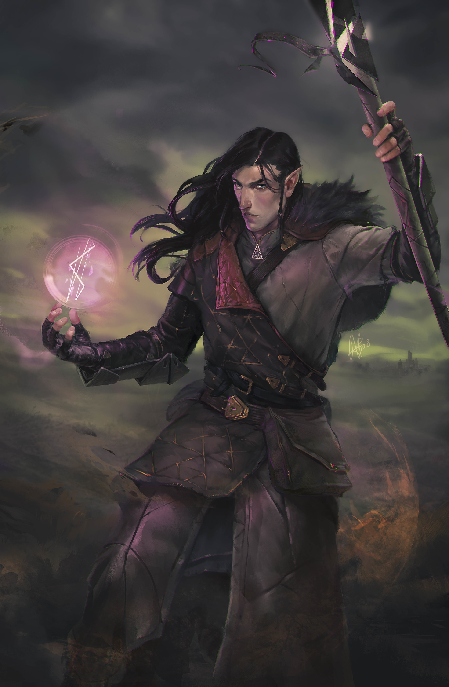

Sirius
Sirius
Arda Gökay MISIROGLU tarafından canlandırılmış ve oynanmıştır. Arda'nın ikinci karakteridir. Sirius İmparatorluk Toprakları'nda doğmuş
Sirius,
Sirius,
Sirius,
Sirius,
Sirius,
Sirius,

Sirius'a Güçlerini Veren Archangel Mirabelle

Mirabelle'nin Sirius'a Bulması Gerektiğini Söylediği Elf Daynore

Harpylerin Kraliçesi ve Sirius'un Validesi Niemlia

Sirius'un Aşık Olduğu Harpy Prensesi Zaerephys

Kraliçe'nin Sirius'a Hediye Ettiği Zincirdar Kayınpederinin Eski Asası